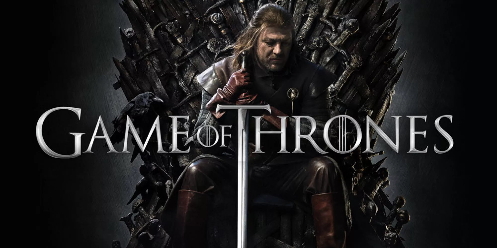
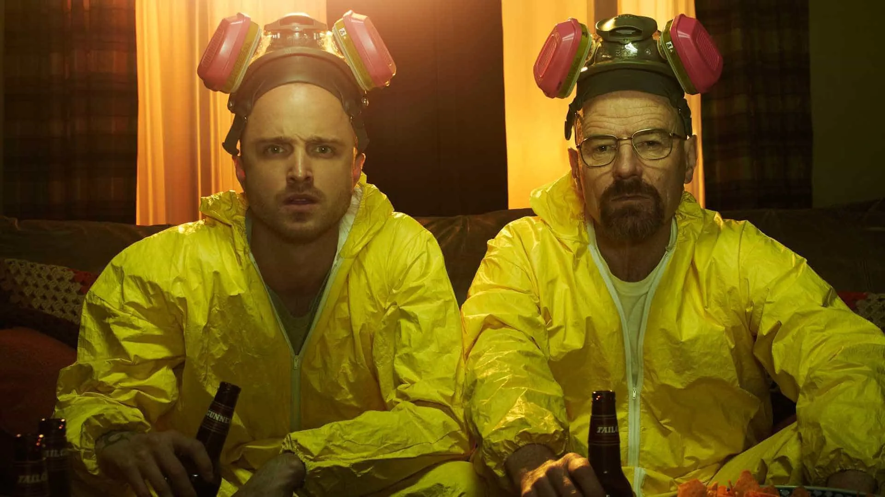
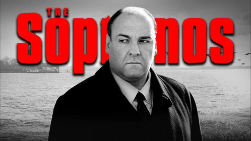

1

Game of Thrones
2011-2019
Fantasia, Drama, Ação
Épica adaptação das obras de George R. R. Martin. Conflitos, batalhas e personagens envolventes na luta pelo Trono de Ferro.
9.3/10 IMDb
89% Rotten Tomatoes
2

Breaking Bad
2008-2013
Crime, Drama, Suspense
A transformação de um professor de química no maior fabricante de metanfetamina do mundo. Uma história intensa e impecável.
9.5/10 IMDb
96% Rotten Tomatoes
3

The Sopranos
1999-2007
Crime, Drama
Revolucionou a televisão. A vida de Tony Soprano, um chefe da máfia com problemas pessoais e familiares.
9.2/10 IMDb
92% Rotten Tomatoes